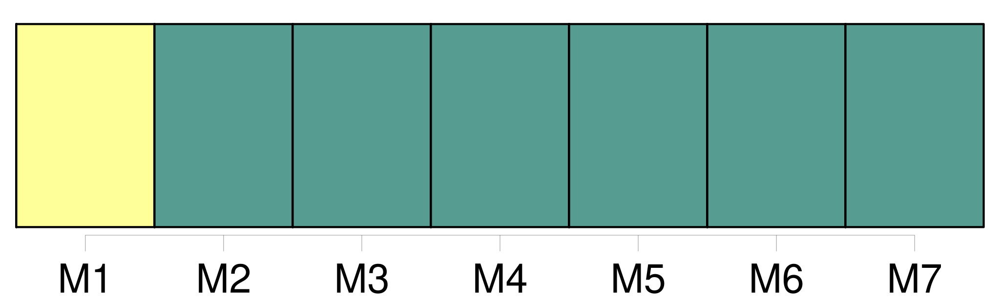

Longueur nb maillons : 59 mentions |
 |
0039 -0049 La présente convention s'applique à tout transport international de personnes, bagages ou [marchandises] , effectué par aéronef contre rémunération. [14 phrases]
CHAPITRE II [10 phrases]
Article 4
Pour le transport de [marchandises] , une lettre de transport aérien est émise. [2 phrases]
Si de tels autres moyens sont utilisés, le transporteur délivre à l'expéditeur, à la demande de ce dernier, un récépissé de [marchandises] permettant l'identification de l'expédition et l'accès aux indications enregistrées par ces autres moyens.
Article 5
Article 6 [6 phrases]
Le troisième exemplaire est signé par le transporteur et remis par lui à l'expéditeur après acceptation de [la marchandise] [4 phrases]
Article 8 [2 phrases] L'expéditeur est responsable de l'exactitude des indications et déclarations concernant [la marchandise] inscrites par lui ou en son nom dans la lettre de transport aérien, ainsi que de celles fournies et faites par lui ou en son nom au transporteur en vue d'être insérées dans le récépissé de [marchandises] ou pour insertion dans les données enregistrées par les autres moyens prévus au paragraphe 2 de l'article 4. [4 phrases]
Sous réserve des dispositions des paragraphes 1 et 2 du présent article, le transporteur assume la responsabilité de tout dommage subi par l'expéditeur ou par toute autre personne à l'égard de laquelle la responsabilité de l'expéditeur est engagée, en raison d'indications et de déclarations irrégulières, inexactes ou incomplètes insérées par lui ou en son nom dans le récépissé de [marchandises] ou dans les données enregistrées par les autres moyens prévus au paragraphe 2 de l'article 4. [1 phrases]
La lettre de transport aérien et le récépissé de [marchandises] font foi, jusqu'à preuve du contraire, de la conclusion du contrat, de la réception de [la marchandise] et des conditions du transport qui y figurent. [1 phrases]
Les énonciations de la lettre de transport aérien et du récépissé de [marchandises] , relatives au poids, aux dimensions et à l'emballage de [la marchandise] ainsi qu'au nombre des colis, font foi jusqu'à preuve du contraire ; celles relatives à la quantité, au volume et à l'état de [la marchandise] ne font preuve contre le transporteur que si la vérification en a été faite par lui en présence de l'expéditeur, et constatée sur la lettre de transport aérien, ou s'il s'agit d'énonciations relatives à l'état apparent de [la marchandise]
Article 12
L'expéditeur a le droit, à la condition d'exécuter toutes les obligations résultant du contrat de transport, de disposer de [la marchandise] , soit en [la] retirant à l'aéroport de départ ou de destination, soit en [l'] arrêtant en cours de route lors d'un atterrissage, soit en [la] faisant livrer au lieu de destination ou en cours de route à une personne autre que le destinataire initialement désigné, soit en demandant son retour à l'aéroport de départ, pour autant que l'exercice de ce droit ne porte préjudice ni au transporteur, ni aux autres expéditeurs et avec l'obligation de rembourser les frais qui en résultent. [3 phrases]
Si le transporteur exécute les instructions de disposition de l'expéditeur, sans exiger la production de l'exemplaire de la lettre de transport aérien ou du récépissé de [la marchandise] délivré à celui -ci, il sera responsable, sauf son recours contre l'expéditeur, du préjudice qui pourra être causé par ce fait à celui qui est régulièrement en possession de la lettre de transport aérien ou du récépissé de [la marchandise] [2 phrases]
Toutefois, si le destinataire refuse [la marchandise] , ou s'il ne peut être joint, l'expéditeur reprend son droit de disposition.
Article 13
Sauf lorsque l'expéditeur a exercé le droit qu'il tient de l'article 12, le destinataire a le droit, dès l'arrivée de [la marchandise] au point de destination, de demander au transporteur de lui livrer [la marchandise] contre le paiement du montant des créances et contre l'exécution des conditions de transport. [1 phrases]
Sauf stipulation contraire, le transporteur doit aviser le destinataire dès l'arrivée de [la marchandise] [1 phrases]
Si la perte de [la marchandise] est reconnue par le transporteur ou si, à l'expiration d'un délai de sept jours après qu' [elle] aurait dû arriver, [la marchandise] n'est pas arrivée, le destinataire est autorisé à faire valoir vis-à-vis du transporteur les droits résultant du contrat de transport. [4 phrases]
Toute clause dérogeant aux dispositions des articles 12, 13 et 14 doit être inscrite dans la lettre de transport aérien ou dans le récépissé de [marchandises] [1 phrases] L'expéditeur est tenu de fournir les renseignements et les documents qui, avant la remise de [la marchandise] au destinataire, sont nécessaires à l'accomplissement des formalités de douane, de police ou d'autres autorités publiques. [13 phrases]
Article 18
Le transporteur est responsable du dommage survenu en cas de destruction, perte ou avarie de [la marchandise] par cela seul que le fait qui a causé le dommage s'est produit pendant le transport aérien. [1 phrases]
Toutefois, le transporteur n'est pas responsable s'il établit, et dans la mesure où il établit, que la destruction, la perte ou l'avarie de [la marchandise] résulte de l'un ou de plusieurs des faits suivants : [1 phrases]
Le transport aérien, au sens du paragraphe 1 du présent article, comprend la période pendant laquelle [la marchandise] se trouve sous la garde du transporteur. [4 phrases]
Article 19 [8 phrases]
Article 22 [5 phrases] Dans le transport de [marchandises] , la responsabilité du transporteur, en cas de destruction, de perte, d'avarie ou de retard, est limitée à la somme de 17 droits de tirage spéciaux par kilogramme, sauf déclaration spéciale d'intérêt à la livraison faite par l'expéditeur au moment de la remise du colis au transporteur et moyennant le paiement d'une somme supplémentaire éventuelle. [2 phrases] En cas de destruction, de perte, d'avarie ou de retard d'une partie [des marchandises] , ou de tout objet qui [y] est contenu, seul le poids total du ou des colis dont il s'agit est pris en considération pour déterminer la limite de responsabilité du transporteur.
Toutefois, lorsque la destruction, la perte, l'avarie ou le retard d'une partie [des marchandises] , ou d'un objet qui [y] est contenu, affecte la valeur d'autres colis couverts par la même lettre de transport aérien ou par le même récépissé ou, en l'absence de ces documents, par les mêmes indications consignées par les autres moyens visés à l'article 4, paragraphe 2, le poids total de ces colis doit être pris en considération pour déterminer la limite de responsabilité. [34 phrases]
Article 29 [6 phrases]
Sauf pour le transport de [marchandises] , les dispositions des paragraphes 1 et 2 du présent article ne s'appliquent pas s'il est prouvé que le dommage résulte d'un acte ou d'une omission du préposé ou du mandataire, fait soit avec l'intention de provoquer un dommage, soit témérairement et avec conscience qu'un dommage en résultera probablement. [3 phrases] En cas d'avarie, le destinataire doit adresser au transporteur une protestation immédiatement après la découverte de l'avarie et, au plus tard, dans un délai de sept jours pour les bagages enregistrés et de quatorze jours pour [les marchandises] à dater de leur réception.
En cas de retard, la protestation devra être faite au plus tard dans les vingt et un jours à dater du jour où le bagage ou [la marchandise] auront été mis à sa disposition. [28 phrases]
Dans les cas de transport régis par la définition du paragraphe 3 de l'article 1, à exécuter par divers transporteurs successifs, chaque transporteur acceptant des voyageurs, des bagages ou des [marchandises] est soumis aux règles établies par la présente convention, et est censé être une des parties du contrat de transport, pour autant que ce contrat ait trait à la partie du transport effectuée sous son contrôle. [3 phrases] S'il s'agit de bagages ou de [marchandises] , le passager ou l'expéditeur aura recours contre le premier transporteur, et le destinataire ou le passager qui a le droit à la délivrance contre le dernier, et l'un et l'autre pourront, en outre, agir contre le transporteur ayant effectué le transport au cours duquel la destruction, la perte, l'avarie ou le retard se sont produits. [61 phrases]
Article 57 |
|
Il est possible de télécharger la ressource sur la page Ortolang |
Si vous avez des questions ou vous voyez des erreurs, merci d'envoyer un mail à silvia.federzoni89@gmail.com |